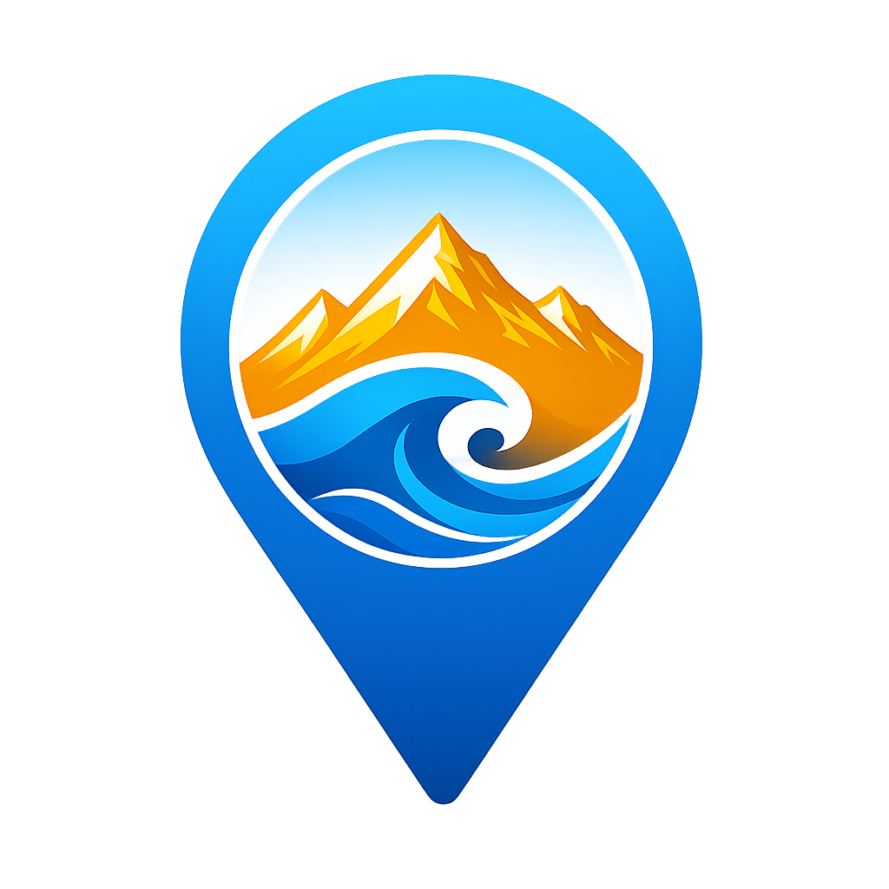

404
Navigasi Terputus
Koordinat jalan atau tautan halaman yang Anda tuju salah arah, telah dihapus, atau tidak pernah ada di dalam pangkalan data platform.

OTW TUBAN
Koordinat jalan atau tautan halaman yang Anda tuju salah arah, telah dihapus, atau tidak pernah ada di dalam pangkalan data platform.